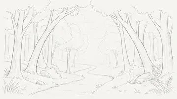

Nature Seed צייר נתיב. הפגש ביניהם.
פאזל פיזיקה חינמי שפותרים בציור ואפשר לשחק בו בדפדפן. מציירים קו בדיו מוגבל, והוא הופך למדרון, לגשר או לנקודת קליטה שמובילה את Water Drop אל Seed. כל רמה שנפתרת משחזרת סצנת יער בצבעי מים.
שוחרר ב-18 בספטמבר 2026 עם 100 רמות, כוכבי יעילות קווים והתקדמות שמורה. הוא חינמי ב-itch.io, ב-Game Jolt וב-indiexpo; גרסת iOS ו-Android היא היעד ועדיין לא נמצאת בחנויות האפליקציות.
ציירציירו בדיו מוגבל
חיבורהביאו את Water Drop ל-Seed
פריחההחזירו את היער
בתוך הגרסה הנוכחית
מה שמציירים הופך לחלק מהרמה.
כל קו שאתם מאשרים הופך לעצם מוצק עם התנגשויות אמיתיות, ו-Water Drop ו-Seed מגיבים אליו. גם הדיו וגם מספר הקווים מוגבלים, ולכן צורת הקו חשובה.
סטטוס שחרור יצא ב-18 בספטמבר 2026

סקירת משחק
פאזל מרגיע שפותרים בציור, שמטרתו להפגיש שתי דמויות קטנות.
הרעיון
ציירו נתיב, הפגישו את Water Drop ו-Seed וצפו בסקיצה השקטה חוזרת לחיים.
הפעל את הגרסה
100 רמות שאפשר לשחק בהן עם ציור בנגיעה, כוכבים ליעילות קווים והתקדמות שנשמרת בין מפגשים.
קהל
שחקנים שאוהבים פאזלים רגועים, פיזיקה קלה, נושאי טבע ומפגשי משחק בנייד בלי לחץ.
סטטוס
שוחרר ב-18 בספטמבר 2026 וחינמי לשחק בו בדפדפן. גרסת נייד היא היעד, והיא עדיין לא בחנויות האפליקציות.
תכונות
מה עושים ב-Nature Seed.
נתיבים פיזיקליים שפותרים בציור
כל פאזל מתחיל בשטח, ב-Seed וב-Water Drop. הקו שהשחקן מצייר הופך למדרון, לגשר או לנקודת הקליטה שמחברת ביניהם.
משוב פיזיקלי ברור
Water Drop ו-Seed נעים בדרכים שאפשר לעקוב אחריהן, ולכן ניסיון כושל מראה לכם מה לשנות.
תגמולים על שחזור היער
סיימו רמה והסצנה המצוירת תתמלא בצבע ובעצים צומחים.
רמות קצרות, ציור בנגיעה
הרמות קצרות ומציירים בנגיעה, וזה מתאים למפגשי משחק קצרים בטלפון.
לולאת משחק
אופן המשחק ב-Nature Seed
- שלב 01קרא את הסקיצה
חפשו מדרונות, פערים ומכשולים, ואת הדרך הבטוחה ביותר לחבר בין שתי הדמויות.
- שלב 02צייר את הקו
ציירו את הקו שלכם. הקו הופך למדרון, למנחה או לנקודת קליטה עבור הדמויות.
- שלב 03אשרו וצפו
אשרו את הקו וצפו איך הדמויות מגיבות. תראו מה עבד ומה לא.
- שלב 04פריחה או עידון
אם Water Drop מגיעה ל-Seed, היער חוזר. אם הם לא נפגשים, ציירו שוב עם מה שלמדתם הרגע.
סיפור / עולם
יער מצויר בקווים עדינים מחכה למים.
Nature Seed התחיל כפאזל פיזיקה שפותרים בציור, שעוסק בשחזור של משהו שביר ולא בדחיפת עצמים זה אל זה.
השחקנים בסיפור הם Seed, Water Drop ויער שחוזר מסקיצה לצבע תוך כדי המשחק. כל פאזל הוא משימה קטנה: ללמוד את השטח, לצייר נתיב ולעזור למים להגיע למשהו שיכול לצמוח.
- כיוון עיצוב
- פיזיקה רגועה ושחזור גלוי
- דמויות
- Water Drop ו-Seed
- אינטראקציה
- ציור בנגיעה
- גמול שליטה
- פתרון בקו אחד מזכה בשלושה כוכבים
במבט חטוף
חינם בדפדפן כבר היום, כשהנייד הוא היעד.
הורד חומרים
חומרי עיתונות ויוצרים של Nature Seed
תצוגות מקדימות בפורמט WebP לסיקור עיתונאי, לסקירת מוציאים לאור ולהתייחסות בעמודי חנויות. קבצי מקור ברזולוציה מלאה זמינים לפי בקשה.
מותג ודמויות
 Water Dropהדמות הכחולה שצריכה להגיע אל Seed.
Water Dropהדמות הכחולה שצריכה להגיע אל Seed.
 דמות Seedהדמות הירוקה ש-Water Drop מנסה להגיע אליה.
דמות Seedהדמות הירוקה ש-Water Drop מנסה להגיע אליה.
 צמיחת עץהעץ שגדל אחרי הפתרון.
צמיחת עץהעץ שגדל אחרי הפתרון.
 תפריט יעררקע התפריט הראשי.
תפריט יעררקע התפריט הראשי.
 רקע משחקרקע רמה עם אזור משחק ריק.
רקע משחקרקע רמה עם אזור משחק ריק.
רמות סקיצה שפותרים בציור
 רמת סקיצה 01סקיצה לפני הפתרון.
רמת סקיצה 01סקיצה לפני הפתרון.
 רמת סקיצה 02סקיצה לפני הפתרון.
רמת סקיצה 02סקיצה לפני הפתרון.
 רמת סקיצה 03סקיצה לפני הפתרון.
רמת סקיצה 03סקיצה לפני הפתרון.
 רמת סקיצה 04סקיצה לפני הפתרון.
רמת סקיצה 04סקיצה לפני הפתרון.
 רמת סקיצה 05סקיצה לפני הפתרון.
רמת סקיצה 05סקיצה לפני הפתרון.
 רמת סקיצה 06סקיצה לפני הפתרון.
רמת סקיצה 06סקיצה לפני הפתרון.


רמת סקיצה 07סקיצה לפני הפתרון. רמת סקיצה 08סקיצה לפני הפתרון.
רמת סקיצה 08סקיצה לפני הפתרון.
 רמת סקיצה 09סקיצה לפני הפתרון.
רמת סקיצה 09סקיצה לפני הפתרון.
 רמת סקיצה 10סקיצה לפני הפתרון.
רמת סקיצה 10סקיצה לפני הפתרון.
סצנות פאזל משוחזרות
 רמה 01 משוחזרתמשוחזר אחרי הפתרון.
רמה 01 משוחזרתמשוחזר אחרי הפתרון.
 רמה 02 משוחזרתמשוחזר אחרי הפתרון.
רמה 02 משוחזרתמשוחזר אחרי הפתרון.
 רמה 03 משוחזרתמשוחזר אחרי הפתרון.
רמה 03 משוחזרתמשוחזר אחרי הפתרון.
 רמה 04 משוחזרתמשוחזר אחרי הפתרון.
רמה 04 משוחזרתמשוחזר אחרי הפתרון.
 רמה 05 משוחזרתמשוחזר אחרי הפתרון.
רמה 05 משוחזרתמשוחזר אחרי הפתרון.
 רמה 06 משוחזרתמשוחזר אחרי הפתרון.
רמה 06 משוחזרתמשוחזר אחרי הפתרון.
 רמה 07 משוחזרתמשוחזר אחרי הפתרון.
רמה 07 משוחזרתמשוחזר אחרי הפתרון.
 רמה 08 משוחזרתמשוחזר אחרי הפתרון.
רמה 08 משוחזרתמשוחזר אחרי הפתרון.
 רמה 09 משוחזרתמשוחזר אחרי הפתרון.
רמה 09 משוחזרתמשוחזר אחרי הפתרון.
 רמה 10 משוחזרתמשוחזר אחרי הפתרון.
רמה 10 משוחזרתמשוחזר אחרי הפתרון.
ציר זמן הפיתוח
ציר הזמן של פיתוח Nature Seed
- קיץ 2025קונספט מקורי
Nature Seed התחיל כרעיון לפאזל נייד רגוע על חיבור ועל שיקום הטבע.
- אוקטובר 2025זהות Seed ו-Water Drop
סיימנו את מסמך העיצוב והחלטנו ש-Seed ו-Water Drop יהיו הדמויות הראשיות.
- דצמבר 2025הפיתוח מתחיל
תכננו את הרמות הראשונות על הנייר, אחר כך התחלנו לבנות, והמערכות המרכזיות התחילו לעבוד ואפשר היה לשחק בהן.
- פברואר 2026מעבר טיוטה גדול על הרמות
מעבר גס וגדול על הרמות נתן לנו בסיס לליטוש ולאיזון בהמשך.
- מרץ-אפריל 2026מכניקה ובדיקת רמות
סקרנו מכניקות נוספות ורמות טיוטה, ואז פישטנו או עיבדנו אותן מחדש כדי לשמור על רוגע המשחק.
- יולי 2026מעבר על אב הטיפוס האנכי
גרסת יולי הכניסה ציור בדיו מוגבל, כוכבי יעילות, התקדמות שמורה ויצירת קווים יציבה ללולאת משחק אחת.
- 18 בספטמבר 2026שחרור Nature Seed
המשחק שוחרר בשם Nature Seed עם 100 רמות, כוכבי יעילות קווים, התקדמות שמורה וסצנות שחזור בצבעי מים.
שאלות נפוצות על Nature Seed
שאלות נפוצות על Nature Seed
האם Nature Seed חינמי?
כן. אפשר לשחק בו בחינם בדפדפן ב-itch.io, ב-Game Jolt וב-indiexpo.
האם Nature Seed כבר יצא?
כן. הוא שוחרר ב-18 בספטמבר 2026 עם 100 רמות. גרסת iOS ו-Android היא פלטפורמת היעד ועדיין לא נמצאת בחנויות האפליקציות.
איזה סוג משחק הוא Nature Seed?
פאזל פיזיקה מרגיע שפותרים בציור. הקווים שאתם מציירים הופכים לעצמים מוצקים שעוזרים ל-Water Drop ול-Seed להיפגש.
איך משחקים ב-Nature Seed?
קראו את השטח, ציירו מסלול בדיו המוגבל שלכם וצפו בשתי הדמויות מגיבות. אם הן מפספסות, ציירו שוב. פחות קווים מזכים ביותר כוכבים, וקו אחד מזכה בשלושה.
מי יוצר את Nature Seed?
WillowinWorlds, סטודיו עצמאי שיוצר משחקי פאזל וארקייד לנייד.
האם אפשר להשתמש בחומרי העיתונות של Nature Seed?
כן, לעיתונות, לסקירת מוציאים לאור ולהתייחסות בחנויות. קבצי המקור נשארים פרטיים אלא אם תבקשו אותם מאיתנו.
Nature Seed Devlog
מה השתנה ומתי
- שחרור Nature Seed
Nature Seed הושק בשמו הסופי כמשחק דפדפן חינמי ב-itch.io, ב-Game Jolt וב-indiexpo, עם 100 רמות, כוכבי יעילות קווים והתקדמות שמורה.
- סבב שחזור ויציבות לרמה 2
רמה 2 משתמשת כעת בצמד רקעי ההפקה שלה, עם הגדרת רמה אמינה יותר, בדיקות התנגשות ומשוב השלמה.
- יולי 2026גרסה שאפשר לשחק בה
גרסת יולי שילבה ציור קווים בדיו מוגבל, כוכבי יעילות, התקדמות שמורה ומשוב שחזור.
- אפריל 2026מעבר לעיבוד מחדש של הרמות
אחרי סקירה פנימית עיבדנו מחדש כמה רמות טיוטה כדי להפחית מורכבות ולהקל על הקריאה שלהן בטלפון.
- מרץ 2026סקירת מכניקה
בדקנו מכניקות נוספות והסרנו את אלה שגרמו לרמות להרגיש עמוסות.
- פברואר 2026מעבר טיוטה גדול על הרמות
מעבר גס וגדול על הרמות הפך לבסיס לליטוש ולאיזון שבאו אחר כך.
- דצמבר 2025הפיתוח מתחיל
המערכות המרכזיות עברו ממסמך העיצוב לצורה שאפשר לשחק בה.
- קיץ 2025קונספט מקורי
הגרסה הראשונה של Nature Seed הייתה רעיון לפאזל רגוע על חיבור ושיקום הטבע.